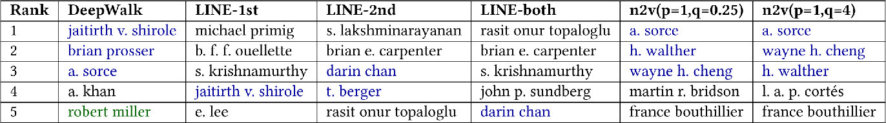
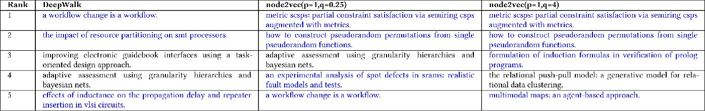

DOI: https://doi.org/10.1145/3184558.3191523
WWW '18: Proceedings of The Web Conference 2018, Lyon,
France, April 2018
Recently there have been a large number of studies on embedding large-scale information networks using low-dimensional, neighborhood and community aware node representations. Though the performance of these embedding models have been better than traditional methods for graph mining applications, little is known about what these representations encode, or why a particular node representation works better for certain tasks. Our work presented here constitutes the first step in decoding the black-box of vector embeddings of nodes by evaluating their effectiveness in encoding elementary properties of a node such as page rank, degree, closeness centrality, clustering coefficient, etc.
We believe that a node representation is effective for an application only if it encodes the application-specific elementary properties of nodes. To unpack the elementary properties encoded in a node representation, we evaluate the representations on the accuracy with which they can model each of these properties. Our extensive study of three state-of-the-art node representation models (DeepWalk, node2vec and LINE) on four different tasks and six diverse graphs reveal that node2vec and LINE best encode the network properties of sparse and dense graphs respectively. We correlate the model performance obtained for elementary property prediction tasks with the high-level downstream applications such as link prediction and node classification, and visualize the task performance vector of each model to understand the semantic similarity between the embeddings learned by various models. Our first study of the node embedding models for outlier detection reveals that node2vec and DeepWalk identify outliers well for sparse and dense graphs respectively. Our analysis highlights that the proposed elementary property prediction tasks help in unearthing the important features responsible for the given node embedding model to perform well for a given downstream task. This understanding would facilitate in picking the right model for a given downstream task.
ACM Reference
Format:
Ayushi Dalmia*, Ganesh J*, and
Manish Gupta. 2018. Towards Interpretation of Node
Embeddings. In WWW '18 Companion: The 2018 Web
Conference Companion, April 23–27, 2018,
Lyon, France. ACM, New York, NY, USA 9 Pages.
https://doi.org/10.1145/3184558.3191523
Research on graph mining is experiencing a recent surge of interest in applying network embedding (or representation) models for applications such as node classification [1, 2, 3], link prediction [5] and recommendation [4]. Though these representation learning models are hard to interpret, they have several advantages over traditional models: (1) they work well in practice, (2) they reduce manual effort of feature engineering, which sometimes introduces errors, (3) they generalize across different domains, and (4) they are generally scalable [2, 5] for large networks. Despite the success of representation learning for information networks, to the best of our knowledge, there exists no work on interpreting these node representations. Our aim is to understand the reason why a particular embedding model works better for certain graph mining tasks.
Our work constitutes the first step in opening the black-box of vector embedding of nodes. Essentially we answer the following question: “What are the core properties encoded in the given node representation that makes it perform well for a given downstream task?” Traditional feature engineering methods have exploited various elementary properties of nodes for high-level downstream tasks. We believe that a node representation is effective for an application only if it encodes the application-specific elementary properties of nodes meticulously. To unpack the elementary properties encoded in a node representation, we evaluate the representations on the accuracy with which they can model each of those properties such as page rank, degree, closeness centrality, clustering coefficient, etc. This is effectively done by building an elementary property prediction classifier for each property which consumes the node representation as input and outputs the prediction for the property value. We assume that if the accuracy of the classifier in predicting a property based on its node representation is low, then this property is not encoded in the representation. This idea is inspired from [6], which focused on interpreting the sentence representations.
In this study, we attempt to understand the node representations generated by the state-of-the-art unsupervised network embedding models: DeepWalk [7], LINE [2] and node2vec [5]. We perform analysis on six graphs: a word co-occurrence network [5], a citation network [2], a co-authorship network [2] and three social networks, BlogCatalog [17], Flickr [17] and YouTube [16], for four downstream tasks: node classification, clustering, link prediction and outlier detection. Specifically, we perform our analysis at three levels. First, we identify the elementary node properties best predicted by each network embedding model for each of the graphs. Second, we consider the winning model for a given downstream task and graph pair, and correlate the elementary node properties best predicted by the winning model with the best performing features for the same downstream task reported in the literature. Finally, we analyze the relationship between the models by visualizing the task performance vector of each model across all graphs and downstream tasks. This study holistically highlights the reason behind the performance of the network embedding model for a given high-level application.
We summarize our main contributions below.
The paper is organized as follows. In Section 2, we present the set of network-specific elementary property prediction tasks to identify the characteristics of the node embeddings. Next, in Section 3, we discuss in brief the set of unsupervised node representation learning models considered in this study. In Section 4, we present the details of our six graph datasets. In Section 5, we present the details of the downstream tasks considered in this study. In Section 6, we perform empirical analysis linking elementary property prediction tasks, node representations and downstream tasks. We conclude with a brief summary in Section 7.
In this section we present the set of network-specific elementary property prediction tasks to identify the characteristics of the node embeddings. These properties correspond to the most popular features used in multiple papers on feature engineering for various network mining applications such as link prediction, clustering, etc. We build the elementary property prediction task classifier using a neural network based model. We propose fifteen elementary property prediction tasks, which are classified into two categories: point-wise and pair-wise tasks, based on the number of inputs considered by the task. We will discuss these tasks next.
As depicted in Fig. 1 (a), the model underlying a point-wise task takes a representation corresponding to a single node as input. Essentially, it measures the degree to which a particular network property is captured by the given node representation.
(a) Degree Task (DEG) : This measures how well connected is the node with the rest of the graph. For example, in a social network, nodes with high degree can be of interest for advertisement agencies for effective influence propagation. Given a node embedding, the task is to predict the number of nodes to which the node is connected to.
(b) Average Neighbor Degree Task (AND) : The average neighbor degree of the node indicates how well connected the node's neighbors are. Given a node embedding, the task is to predict the mean degree of the nodes’ neighbors.
(c) Degree Centrality Task (DEGCEN) : Degree centrality is one of the ways to identify the most important vertices within a graph. Applications include identifying the most influential person(s) in a social network, key infrastructure nodes in the Internet or urban networks, and super-spreaders of diseases. Nodes with high degree centrality are most influential in a network. Given a node embedding, the task is to predict the degree centrality of the node.
(d) Indegree Task (IDEG) : In case of a directed network, the indegree indicates how much of inflow happens in the node. As an example, consider a traffic network where the nodes are junctions in the road and the edges indicate the flow of traffic. A node with high indegree would indicate a lot of traffic movement from other sources to the node. Analyzing the indegree in such a case could help in urban planning. Given a node embedding, the task is to predict the number of incoming links of the node. This task is applicable only for directed graphs.
(e) Outdegree Task (ODEG) : In case of a directed network, the outdegree indicates how much of outflow happens from the node. High outdegree nodes include hub pages like manuals or product list pages, which act as important junctions of information. Given a node embedding, the task is to predict the number of outgoing links of the node. Similar to the indegree task, this task is applicable only for directed graphs.
(f) Clustering Coefficient Task (CLCO) : The clustering coefficient is a measure of the degree to which the nodes in a graph tend to cluster together. Given a node embedding, the task is to predict the clustering coefficient of the node.
(g) Community Count Task (COC) : The number of communities in which the node belongs reflects the semantic nature of the node. For example, in a social network like Facebook, where the nodes are users of the network and the communities are the groups in the network, a node with a high community count would indicate a very social person while a low community count would indicate an introvert. Given a node embedding, the task is to predict the nodes’ membership (or community) count. This task is only applicable to the graphs where at least some of the nodes belong to more than one community.
(h) Page Rank Task (PAGRK) : The page rank of a node is another measure to capture influential nodes in a graph. Given a node embedding, the task is to predict the page rank score of the node.
(i) Closeness Centrality Task (CLCEN) : The closeness centrality of a node is a measure of how central is the node with respect to the other nodes in the graph. It is calculated as the sum of the length of the shortest paths between the node and all the other nodes in the graph. Thus, the more central a node is, the closer it is to all the other nodes. Given a node embedding, the task is to predict the closeness centrality of the node.
| Name | WIKIPEDIA | PAPERCITATION | COAUTHORSHIP | BLOGCATALOG | FLICKR | YOUTUBE |
| Node type | Word | Document | Author | Blogger | User | User |
| Directed? | ✗ | ✓ | ✗ | ✗ | ✗ | ✗ |
| Weighted? | ✓ | ✗ | ✓ | ✗ | ✗ | ✗ |
| #Nodes | 4,777 | 7,08,497 | 4,73,638 | 10,312 | 80,513 | 11,38,499 |
| #Edges | 1,84,812 | 11,66,376 | 14,59,085 | 3,33,983 | 58,99,882 | 29,90,443 |
| Average Degree | 38 | 3 | 6 | 64 | 146 | 5 |
| Network Density | 1.62 × 10− 2 | 4.6 × 10− 6 | 1 × 10− 5 | 6.3 × 10− 3 | 1.8 × 10− 3 | 4.6 × 10− 6 |
| #Labels | 40 | 24 | 24 | 39 | 195 | 47 |
| Labels | Stanford POS tags | CS Field | CS Field | Interests | Groups | Groups |
As depicted in Fig. 1 (b), the model underlying a pair-wise task takes two representations, corresponding to a pair of nodes, as input. The subsequent layer in the model uses concatenation as the compositionality technique to combine the inputs. Essentially, the task measures the degree to which a particular network property is captured through the interaction of the representations corresponding to the two nodes of interest.
(j) Edge Weight Task (EDGWT) : The edge weight of a node indicates how strong is the connection between two nodes. Given embeddings of two nodes, the task is to predict the strength of the link connecting them. This task is applicable only for weighted graphs.
(k) Is First Degree Task (IFDEG) : The first degree neighbors indicates the one-hop neighbors of a node. Given embeddings of two nodes, the task is to predict whether the nodes are neighbors of each other or not. To generate negative instances for this binary classification task, we generate a random pair of nodes which are not direct neighbors.
(l) Is Second Degree Task (ISDEG) : The two-hop neighbors of a node are used to indicate the second degree neighbors. Given embeddings of two nodes, the task is to predict whether the nodes are second hop neighbors of each other or not. To generate negative instances for this binary classification task, we generate a random pair of nodes which are not 2-hop neighbors.
(m) Is Same Community Task (ISCO) : This metric gives an indication of semantic similarity between two nodes. If two nodes belong to the same community, then they are semantically related to each other. Given embeddings of two nodes, the task is to predict whether nodes belong to the same community or not. To generate negative instances for this binary classification task, we generate a random pair of nodes which belong to different communities.
(n) Jaccard Coefficient Task (JC) : The Jaccard Coefficient measures the similarity between two nodes with respect to the common neighbors shared by them. An example application is to measure similarity between two genes in a gene interaction network. Given embeddings of two nodes, the task is to predict the Jaccard Coefficient between the nodes.
(o) Shortest Path Length Task (SPL) : The shortest path length task indicates the minimum number of hops needed to reach a node from another node. An example application where this feature is useful is urban planning. In a road network, if two places have an extremely large shortest-path-length, planners should take initiative to enhance the connectivity between the nodes by say building flyovers. Given embeddings of two nodes, the task is to predict the shortest path length between two nodes.
Note that all the prediction tasks (excluding tasks (g), (h) and (i)) are posed as multi-class classification problems after binning the input. Specifically, we use equal frequency binning to arrive at reasonably balanced bins by using variable ranges.
In this section we discuss in brief the set of unsupervised node representation learning models considered in this study.
DeepWalk [7] : DeepWalk model learns node embeddings by exploring local neighborhood of the nodes using truncated random walks. Since the strategy of the random walk is uniform (also Depth-First Search (DFS) style), it gives us no control over the explored neighborhoods. Also, this model works only for unweighted, undirected graphs. We consider the parameter settings for DeepWalk as suggested by the authors.
LINE [2] : LINE model learns a d-dimensional feature representation in two separate phases. The first phase begins by learning d/2 dimensions by Breadth-First Search (BFS)-style simulations over immediate neighbors of nodes followed by learning the other d/2 dimensions by sampling nodes strictly at a 2-hop distance from the source nodes. Such an exploration strategy provides no flexibility in exploring nodes at further depths. Unlike DeepWalk, this model works for all types of graphs. We consider three configurations of LINE: ‘LINE-1st’, ‘LINE-2nd’ and ‘LINE-both’, where we consider the dimensions learned through 1-hop only, 2-hop only and both respectively.
node2vec (n2v) [5] : node2vec model explores diverse network neighborhoods by designing a sampling strategy that allows us to smoothly interpolate between BFS and DFS, through two parameters p and q. Parameter p controls the likelihood of immediately revisiting a node in the walk while parameter q allows the search to differentiate between “inward” and “outward” nodes. The core assumption is that BFS and DFS are extreme sampling paradigms suited for structural equivalence (nodes sharing similar roles) and homophily (nodes from the sample network community) respectively. node2vec's sampling strategy accommodates for the fact that these notions of equivalence are not competing or exclusive, and real-world networks commonly exhibit a mixture of both. To find the best model, we perform a grid-search for the p and q values in the search space as suggested by the authors.
In this section we present the details of the graphs considered in this study. The statistics of the graphs are given in Table 1.
WIKIPEDIA [5] : This is a word co-occurrence network extracted from the first million bytes of the Wikipedia dump. The labels represent the Part-Of-Speech (POS) tags inferred using the Stanford POS-Tagger. The downstream tasks for this dense graph are POS tagging of words and predicting if two words will co-occur or not.
PAPERCITATION [8] : This is a citation graph where the node represents research paper (or article) and the directed edge represents the citation relationship. Each paper is tagged with one of the 24 computer science fields. The downstream tasks for this sparse graph are paper classification, prediction of link between two papers, clustering of all the papers and outlier detection.
COAUTHORSHIP [8] : This is a co-authorship graph where the nodes represent authors. Two authors are connected if they co-author at least one research article. Each author can belong to one or more computer science fields in which she publishes her paper. The downstream tasks for this sparse graph are author classification, predicting if two authors will collaborate in future or not, clustering of all the authors and outlier detection.
BLOGCATALOG [17] : This is a social network where node represents the blogger and edge defines their social relationship. Each blogger is associated with one or more topic categories identified by her interests. The downstream tasks for this graph are classifying a blogger with respect to her interests and predicting whether two bloggers are connected to each other or not.
FLICKR [17] : In this social network, each user is tagged with the set of interest groups she has subscribed to. The downstream tasks for this social network are classifying the users based on their groups and predicting whether two users are connected to each other in the graph or not.
YOUTUBE [16] : This is an extremely large network drawn from YouTube where the node represents the user and the edge defines their social relationship. The labels indicate the video genres enjoyed by a user. The downstream tasks for this popular network are classifying users based on the video genres they are interested in and predicting whether two users are connected to each other or not.
In this section we present the details of the downstream tasks considered in this study. We use the node embeddings obtained after training the model for each graph as input features.
Multi-Label Classification : In a real world network, we do not have the label information for all the nodes. Further, when a new node comes in, predicting the labels can be of important value. For instance, in case of a user-caller network, the telecommunication company is keen on classifying new users as high value customer or not. Hence, we consider the problem of node classification [20] as one of the downstream applications. In this task, we predict the node labels using a one-vs-rest logistic regression classifier 1. We report the average micro and macro F 1 score after performing training on the 70% of the nodes and testing on 30% instances.
Link Prediction : Inferring missing link [13] or predicting whether there would be a link between two nodes is an interesting task for inferring new interactions among the nodes in a graph. We pose this task as a binary classification problem which predicts whether a link (or edge) exists between two given nodes. We use the Hadamard operator (as suggested by [5]) to compute the edge feature based on the embeddings of two nodes. We then feed the edge feature to a logistic regression classifier 2 with L2 regularization and report the accuracy score.
Clustering : Clustering in graphs [9] is a popular problem as it allows to analyze large-scale networks by looking at individual clusters. We perform this analysis for graphs having non-overlapping clusters only. For this task, we use the node embeddings as data points and run k-means with k as 24 for both COAUTHORSHIP and PAPERCITATION graphs, and report the Normalized Mutual Information score. We set k to 24 since both the graphs have 24 labels.
Outlier Detection : Detecting outliers is an important task with numerous high-impact applications in the areas of security, finance and healthcare. While outlier detection has been a well researched problem, outlier detection in graphs has been a recent active area of research [18]. Outliers in graphs are detected at various granularity levels – nodes, edges, subgraphs, cuboids and graphs. Our work is the first to analyze and interpret the use of node embeddings for outlier detection. As we interpret node embeddings, we focus on node-based outlier detection for different graphs discussed in Section 4. We consider each node in the graph as a point in the n-dimensional space represented using node embeddings. We quantify the outlierness of a node using Local Outlier Factor (LOF) [19]. Next, we rank these nodes based on the LOF score. To understand the performance of different node embedding models, we perform qualitative analysis using the top five nodes as ranked using the LOF score obtained using different embeddings. We showcase the different case studies in Section 6.
In this section we perform empirical analysis to answer the following questions.
We end the section with a summary of useful insights obtained from the work.
We now present the performance of different node embedding models (discussed in Section 3) on their ability to encode various elementary properties (discussed in Section 2). The results are illustrated in Fig. 2.
Average Neighbor Degree Task (AND) : We find that the behavior of the node embedding models vary with respect to the network density. For dense graphs like WIKIPEDIA, we observe that LINE-both is able to perform breadth-first walk and capture the neighborhood to give the best performance. In case of moderately dense graphs like BLOGCATALOG and FLICKR, we see that the node embeddings obtained from DeepWalk perform the best. Finally, for sparse graphs like PAPERCITATION and YOUTUBE, we see that node2vec is able to capture the average neighbor degree due to its ability to explore the graph in a flexible manner.
Clustering Coefficient Task (CLCO) : In case of CLCO property we find that as the density of the graph increases, we need to shift from node2vec to LINE based node embeddings. In case of dense and moderately dense graphs like WIKIPEDIA and FLICKR, LINE performs best. However, node2vec performs best for a sparse graph like PAPERCITATION. We find that DeepWalk is not able to capture this property for any of these graphs. Further, for BLOGCATALOG and YOUTUBE, the performance of all the node embeddings are approximately similar.
Community Count Task (COC) : We find that the performance for the dense WIKIPEDIA graph is best using the LINE based model. node2vec and DeepWalk both give a similar performance for the sparse YOUTUBE network. The performance of the node embeddings for different models for BLOGCATALOG, FLICKR and COAUTHORSHIP graphs are similar. For PAPERCITATION graph, this property is not applicable as every node is associated with one community only.
Degree Centrality Task (DEGCEN) and Degree (DEG) : Both DEGCEN and DEG are similar properties as DEGCEN is normalised DEG. We find that for graphs with low average degrees such as YOUTUBE, AUTHOR and PAPER, node2vec performs good while LINE based node embeddings give the best performance for graphs having high average degree such as BLOGCATALOG, FLICKR and WIKIPEDIA. DeepWalk does not give any better performance compared to the other models for any of the graphs.
Page Rank Task (PAGRK) : For this property we find that the ability of node2vec to explore the neighborhood is an overkill for dense graphs. We find that node2vec performs best for sparse and medium dense graphs such as COAUTHORSHIP, PAPERCITATION and YOUTUBE. On the other hand LINE-both is the model of choice for dense graphs like BLOGCATALOG, FLICKR and WIKIPEDIA. Going deeper, we find LINE-both performs well when average degree of a dense graph is high. This is observed in case of BLOGCATALOG and FLICKR where LINE-both is the best performing model. In case of WIKIPEDIA, LINE-1st beats LINE-both marginally. Further we empirically find that modeling one hop neighbors is fruitful for this property. This is consistently observed across all the six graphs where LINE-1st beats LINE-2nd.
Closeness Centrality Task (CLCEN) : We find that LINE performs well for dense graphs such as COAUTHORSHIP, WIKIPEDIA, BLOGCATALOG and FLICKR. node2vec gives good performance for sparse graphs like YOUTUBE and PAPERCITATION.
Indegree Task (IDEG) and Outdegree Task (ODEG) : We analyze both these properties for PAPERCITATION graph and find that for this sparse graph, node2vec beats all the other models. DeepWalk is able to beat LINE implying that strict exploration strategies employed by LINE are sub-optimal for capturing both these properties.
Is Same Community Task (ISCO) : Due to DFS-based random walks, DeepWalk is able to capture the community information of a node well. The performance of DeepWalk is consistently best across all our graphs except COAUTHORSHIP. In case of the COAUTHORSHIP graph, we hypothesize that it is critical to give more importance to the neighborhood information as authors with similar neighborhood structure work in similar research areas. For the PAPERCITATION graph, all the models perform equally well.
Edge Weight Task (EDGWT) : The ability of all the node embedding models is almost similar in capturing this feature.
Is First Degree Task (IFDEG) and Is Second Degree Task
(ISDEG) : Due to the flexible exploration capability of node2vec, this model is able to perform competitively across all graphs for both the features.
Jaccard Coefficient Task (JC) : JC requires understanding the neigborhood information of nodes. As LINE is known to capture the neighborhood, we find that the node embeddings generated from LINE perform best across all the graphs.
Shortest Path Length Task (SPL) : We find that DeepWalk is able to capture this property well for dense graphs like BLOGCATALOG, FLICKR and WIKIPEDIA graphs. In case of medium dense and sparse graphs like COAUTHORSHIP, PAPERCITATION and YOUTUBE we find that LINE-1st is the best performing model. Both DeepWalk and LINE-1st exploit DFS-based exploration of the graph which helps in capturing this property well.
Having identified the elementary network properties that are best encoded by the node representation models, we now seek to explain the reason behind the superior performance of a particular model for an application and a graph pair. To this end, we present accuracy of various node representations for multiple downstream tasks (excluding outlier detection) in Fig. 3. Further, we consider the winning model for every downstream task and correlate the best performing features (in terms of the properties it encodes) of the winning model with that of the best performing features for the same downstream task reported in the literature for different types of graphs.
Node Classification : We analyzed the best performing classification models for different types of graphs and identified the features that are best encoded in these models. For sparse graphs such as PAPERCITATION and YOUTUBE, LINE and node2vec model outperform other models respectively since they best capture important task specific properties such as DEG and DEGCEN. In case of a medium dense graph like COAUTHORSHIP, node2vec is the only model to capture all the relevant properties such as CLCO, DEGCEN, DEG, PAGRK and CLCEN, and hence outperforms other models that fail to capture these properties. LINE-2nd beats other models for WIKIPEDIA since it is the only model to capture CLCO and SPL features very accurately. DeepWalk captures these features well for dense graphs like BLOGCATALOG and FLICKR. This explains why DeepWalk performs best for node classification for dense graphs. Our observations are supported by [21, 22] where the authors have claimed the importance of these features for the task of node classification.
Link Prediction : Link prediction has been extensively studied in a supervised setting [12, 13] where handcrafted topological features of the nodes in the graph are used. We find that the features presented in these works are in correlation with features best captured by the winning models for this task. Similar to the previous task, LINE and node2vec models outperform other models for sparse graphs like PAPERCITATION and YOUTUBE thanks to their ability to best capture ISCO (an important feature for link prediction). In case of a medium dense graph like COAUTHORSHIP, most relevant features such as AND, CLCO, JC and CLCEN are captured best by LINE-both. For dense graphs like BLOGCATALOG and FLICKR, CLCO, IFDN, ISDN being the most important features are captured best by LINE-both thereby enabling it to beat other models. This can be attributed to the training objective of LINE which directly optimizes its representation to capture observed and unobserved links.
Clustering : We perform the task of clustering on PAPERCITATION and COAUTHORSHIP graphs3. We find that for a sparse graph like PAPERCITATION, degree and community based features like IFDN, ISDN and ISCO are important and LINE-1st is the only model to encode all these features. In case of sparse graphs the one hop neighborhood of a node modeled is important to generate clusters. On the other hand, for a medium dense COAUTHORSHIP graph we find centrality based measures like CLCO, DEGCEN, DEG, PR and CLCEN help node2vec to achieve the best performance. Since the number of edges are high for this graph, these centrality based measures give a positive signal in performing clustering.
|  |
|  |
Outlier Detection : We perform outlier detection task for PAPERCITATION and COAUTHORSHIP graphs only as the node-id to name information is absent in the datasets corresponding to the rest of the graphs. Outliers for COAUTHORSHIP graphs typically correspond to authors who have published very less or those who publish in many disparate computer science fields. For a dense graph like COAUTHORSHIP (as shown in Table 2), we find DeepWalk to be more precise than the other models in ranking the outliers. In case of the PAPERCITATION graph, papers with unusually high or low citations are considered to be outliers. For a sparse graph like PAPERCITATION (as shown in Table 3), we find node2vec to be more precise upon inspection of the top five results. We find that the elementary properties which are captured by these models for the respective graphs are important for outlier detection as discussed in the survey paper [18].
To understand the semantic similarity between the embeddings learned by various models, we compare the per-instance performance across all the models. We assume that for a given task and graph pair, similar models should perform similarly for the same test instances. We represent a node embedding model as a vector where each position of the vector contains the performance of the model on a different test instance. We perform this analysis for all the downstream tasks except for the outlier detection task (which is non-quantitative) and each dimension of a given model is set to 1 if the model's prediction for a test instance is correct with assignment of 0 otherwise. To aid visualization, we perform two-dimensional projection of the set of model performance vectors using principal component analysis (as shown in Fig. 4, 5, and 6). For node classification, we find that all LINE methods perform similarly. This performance is consistent across graphs because the performance is node-based thereby making it not relevant to the density of the graph. For link prediction, we find that node2vec behaves similar to LINE-both and DeepWalk for COAUTHORSHIP and PAPERCITATION respectively. Unlike node classification, the LINE methods behave differently as the performance is edge-based wherein density of the graph does matter. Hence, performance is different with respect to WIKIPEDIA graph which is denser than the PAPERCITATION or COAUTHORSHIP graphs. Similar scenario is observed for the clustering task where the results are different across graphs as the task requires both node and edge information. For COAUTHORSHIP graph, node2vec behaves similar to LINE-both. For PAPERCITATION graph, LINE-1st, LINE-both, DeepWalk perform similarly while node2vec is very distinctive.
Our extensive experimentation with many node embedding models across diverse graphs for important network features provides the following insights.
All the above-mentioned experiments can be reproduced using the publicly available code at https://github.com/ganeshjawahar/interpretNode.
In the growing field of representation learning, researchers are exploring network embedding methods to push the frontier for several graph mining tasks. We presented the first work towards interpreting the network embedding models in a fine-grained fashion. Our study of the state-of-the-art models on diverse graphs illustrated the efficacy of the proposed methods in holistically understanding the reason behind the effectiveness of various models for diverse tasks. In future, we wish to understand models that embed heterogeneous graphs such as word-document networks [1, 3], document-label networks [1, 3], document-image networks [15], word-POI networks [4] and so on. Similar to the work [24] that identifies which dimensions of word embeddings are most correlated with different linguistic properties, we would like to unpack the important dimensions within node embeddings. We also wish to compare the distributed node embeddings with the node representations generated by traditional statistical latent methods [23].
1https://github.com/phanein/deepwalk/blob/master/example_graphs/scoring.py
2http://scikit-learn.org/stable/modules/generated/sklearn.linear_model.LogisticRegression.html
3Graphs such as WIKIPEDIA, BLOGCATALOG, FLICKR and YOUTUBE have overlapping cluster labels and hence we ignore them for this application.
This paper is published under the Creative Commons Attribution-NonCommercial-NoDerivs 4.0 International (CC-BY-NC-ND 4.0) license. Authors reserve their rights to disseminate the work on their personal and corporate Web sites with the appropriate attribution.
WWW '18, April 23-27, 2018, Lyon, France
© 2018; IW3C2 (International World Wide Web Conference
Committee), published under Creative Commons
CC-BY-NC-ND 4.0 License. ACM ISBN
978-1-4503-5640-4/18/04.
DOI: https://doi.org/10.1145/3184558.3191523